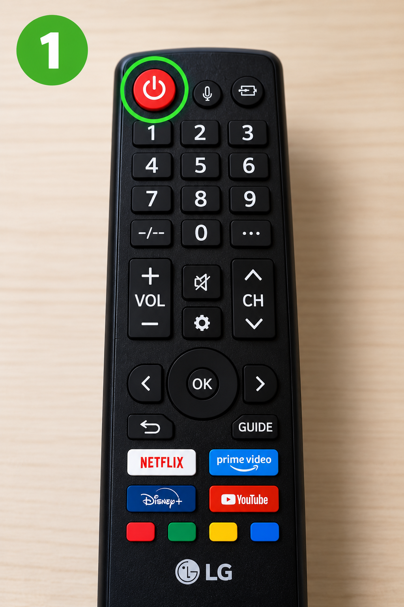
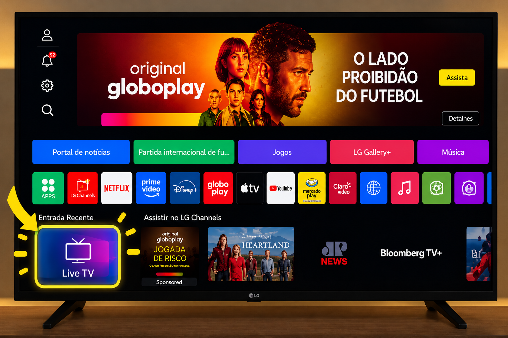
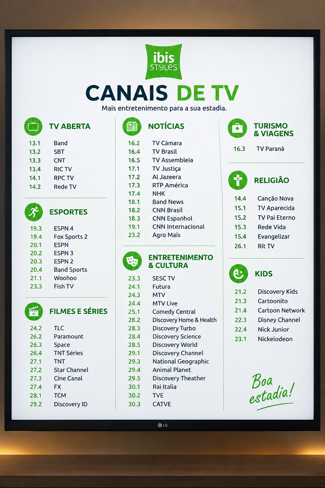

Como assistir à TV Local
Globo, SBT, Band e outros canais abertos.
Globo, SBT, Band e outros canais abertos.
Utilize o controle remoto e pressione o botão Power para ligar a televisão.

Na tela inicial da televisão, selecione a opção Live TV, localizada no canto inferior esquerdo da tela.

Depois de acessar o Live TV, utilize as setas ou os botões de canal do controle remoto para escolher o canal desejado.
